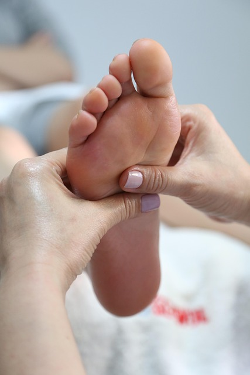

JOURNAL Renovação da pele
Peeling químico: recuperação, proteção da pele e o que pode variar
A palavra peeling não descreve uma experiência única. O ativo, a intensidade, a área, a condição da barreira cutânea e o objetivo do plano mudam o preparo e a recuperação.

A escolha vem antes da descamação
Descamar mais não é um indicador universal de resultado. A consulta avalia se existe indicação, qual intensidade faz sentido e se a pele precisa primeiro de uma rotina mais estável.
O pós-procedimento faz parte do cuidado
Calor, vermelhidão, sensibilidade e descamação podem ocorrer conforme o protocolo. Puxar peles, somar ácidos, se expor ao sol ou testar produtos por conta própria pode aumentar irritação e risco de manchas.
Saber quando pedir ajuda
Dor intensa, bolhas extensas, secreção, piora progressiva ou mudança importante de cor não devem ser normalizadas. A orientação recebida na consulta é a referência para decidir o que fazer.

Referências e próximo passo
As fontes abaixo ajudam a entender princípios de segurança e evidência. Elas não substituem a avaliação presencial, nem autorizam automedicação ou mudanças de tratamento por conta própria.
Conhecer o serviço relacionado → · Agendar consulta em Londrina →